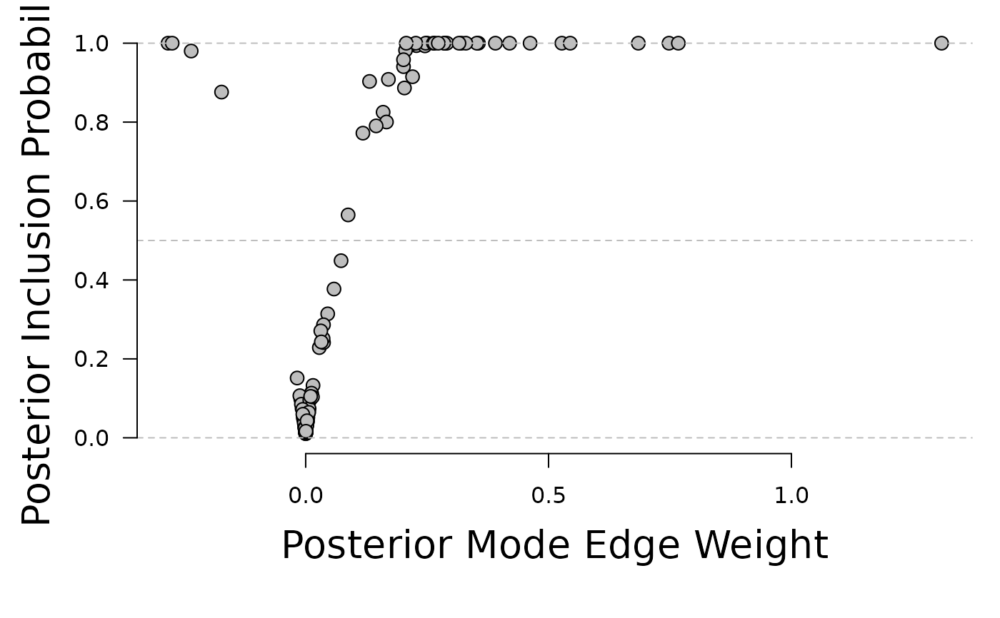
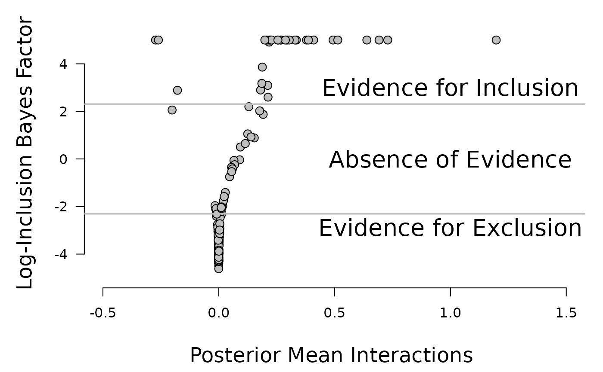

Bayesian structure learning in Markov Random Fields of mixed binary and ordinal variables using MCMC.
bgm.RdThe function bgm explores the joint pseudoposterior distribution of
structures and parameters in a Markov Random Field for mixed binary and
ordinal variables.
Usage
bgm(
x,
iter = 10000,
burnin = 1000,
interaction_prior = c("UnitInfo", "Cauchy"),
cauchy_scale = 2.5,
threshold_alpha = 1,
threshold_beta = 1,
save = FALSE,
display_progress = TRUE
)Arguments
- x
A matrix with
nrows andpcolumns, containing binary and ordinal variables fornindependent observations andpvariables in the network. Variables are recoded as non-negative integers(0, 1, ..., m)if not done already. Unobserved categories are collapsed into other categories after recoding. Seereformat_datafor details.- iter
The number of iterations of the Gibbs sampler. Defaults to
1e4. For better estimates, it is recommended to run the procedure for at least1e5iterations.- burnin
The number of burnin iterations. The output of the Gibbs sampler is stored after burnin iterations.
- interaction_prior
The prior distribution for the interaction effects. Currently, two prior densities are implemented: The Unit Information prior (
interaction_prior = "UnitInfo") and the Cauchy prior (interaction_prior = "Cauchy"). Defaults to"UnitInfo".- cauchy_scale
The scale of the Cauchy prior for interactions. Defaults to
2.5.- threshold_alpha, threshold_beta
The shape parameters of the Beta-prime prior for the thresholds. Defaults to
1.- save
Should the function collect and return all samples from the Gibbs sampler (
save = TRUE)? Or should it only return the (model-averaged) posterior means (save = FALSE)? Defaults toFALSE.- display_progress
Should the function show a progress bar (
display_progress = TRUE)? Or not (display_progress = FALSE)? Defaults toTRUE.
Value
If save = FALSE (the default), the result is a list containing
the following matrices:
gamma: A matrix withprows andpcolumns, containing posterior inclusion probabilities of individual edges.interactions: A matrix withprows andpcolumns, containing model-averaged posterior means of the pairwise associations.thresholds: A matrix withprows andmax(m)columns, containing model-averaged category thresholds.
If save = TRUE, the result is a list containing:
samples.gamma: A matrix withiterrows andp * (p - 1) / 2columns, containing the edge inclusion indicators from every iteration of the Gibbs sampler.samples.interactions: A matrix withiterrows andp * (p - 1) / 2columns, containing parameter states from every iteration of the Gibbs sampler for the pairwise associations.samples.thresholds: A matrix withiterrows andsum(m)columns, containing parameter states from every iteration of the Gibbs sampler for the category thresholds.
Column averages of these matrices provide the model-averaged posterior means.
Details
A discrete spike and slab prior distribution is stipulated on the pairwise interactions. By formulating it as a mixture of mutually singular distributions, the function can use a combination of Metropolis-Hastings and Gibbs sampling to create a Markov chain that has the joint posterior distribution as invariant. Current options for the slab distribution are the unit-information prior or a Cauchy with an optional scaling parameter. A Beta-prime distribution is used for the exponent of the category parameters. A uniform prior is used for edge inclusion variables (i.e., the prior probability that the edge is included is 0.5).
Examples
# \dontrun{
##Analyse the Wenchuan dataset
# Here, we use 1e4 iterations, for an actual analysis please use at least
# 1e5 iterations.
fit = bgm(x = Wenchuan)
#> Warning: There were 18 rows with missing observations in the input matrix x.
#> Since bgms cannot handle missing responses, these rows were
#> excluded from the analysis.
#------------------------------------------------------------------------------|
# INCLUSION - EDGE WEIGHT PLOT
#------------------------------------------------------------------------------|
par(mar = c(6, 5, 1, 1))
plot(x = fit$interactions[lower.tri(fit$interactions)],
y = fit$gamma[lower.tri(fit$gamma)], ylim = c(0, 1),
xlab = "", ylab = "", axes = FALSE, pch = 21, bg = "gray", cex = 1.3)
abline(h = 0, lty = 2, col = "gray")
abline(h = 1, lty = 2, col = "gray")
abline(h = .5, lty = 2, col = "gray")
mtext("Posterior Inclusion Probability", side = 1, line = 3, cex = 1.7)
mtext("Posterior Mode Edge Weight", side = 2, line = 3, cex = 1.7)
axis(1)
axis(2, las = 1)

#------------------------------------------------------------------------------|
# EVIDENCE - EDGE WEIGHT PLOT
#------------------------------------------------------------------------------|
#The bgms package currently assumes that the prior odds are 1:
prior.odds = 1
posterior.inclusion = fit$gamma[lower.tri(fit$gamma)]
posterior.odds = posterior.inclusion / (1 - posterior.inclusion)
log.bayesfactor = log(posterior.odds / prior.odds)
log.bayesfactor[log.bayesfactor > 5] = 5
par(mar = c(5, 5, 1, 1) + 0.1)
plot(fit$interactions[lower.tri(fit$interactions)], log.bayesfactor, pch = 21, bg = "#bfbfbf",
cex = 1.3, axes = FALSE, xlab = "", ylab = "", ylim = c(-5, 5.5),
xlim = c(-0.5, 1.5))
axis(1)
axis(2, las = 1)
abline(h = log(1/10), lwd = 2, col = "#bfbfbf")
abline(h = log(10), lwd = 2, col = "#bfbfbf")
text(x = 1, y = log(1 / 10), labels = "Evidence for Exclusion", pos = 1,
cex = 1.7)
text(x = 1, y = log(10), labels = "Evidence for Inclusion", pos = 3, cex = 1.7)
text(x = 1, y = 0, labels = "Absence of Evidence", cex = 1.7)
mtext("Log-Inclusion Bayes Factor", side = 2, line = 3, cex = 1.5, las = 0)
mtext("Posterior Mean Interactions ", side = 1, line = 3.7, cex = 1.5, las = 0)
#------------------------------------------------------------------------------|
# THE LOCAL MEDIAN PROBABILITY NETWORK
#------------------------------------------------------------------------------|
tmp = fit$interactions[lower.tri(fit$interactions)]
tmp[posterior.inclusion < 0.5] = 0
median.prob.model = matrix(0, nrow = ncol(Wenchuan), ncol = ncol(Wenchuan))
median.prob.model[lower.tri(median.prob.model)] = tmp
median.prob.model = median.prob.model + t(median.prob.model)
rownames(median.prob.model) = colnames(Wenchuan)
colnames(median.prob.model) = colnames(Wenchuan)
library(qgraph)

qgraph(median.prob.model,
theme = "TeamFortress",
maximum = .5,
fade = FALSE,
color = c("#f0ae0e"), vsize = 10, repulsion = .9,
label.cex = 1.1, label.scale = "FALSE",
labels = colnames(Wenchuan))
 # }
# }